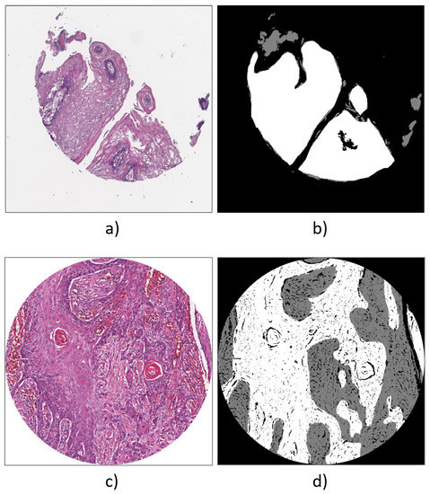
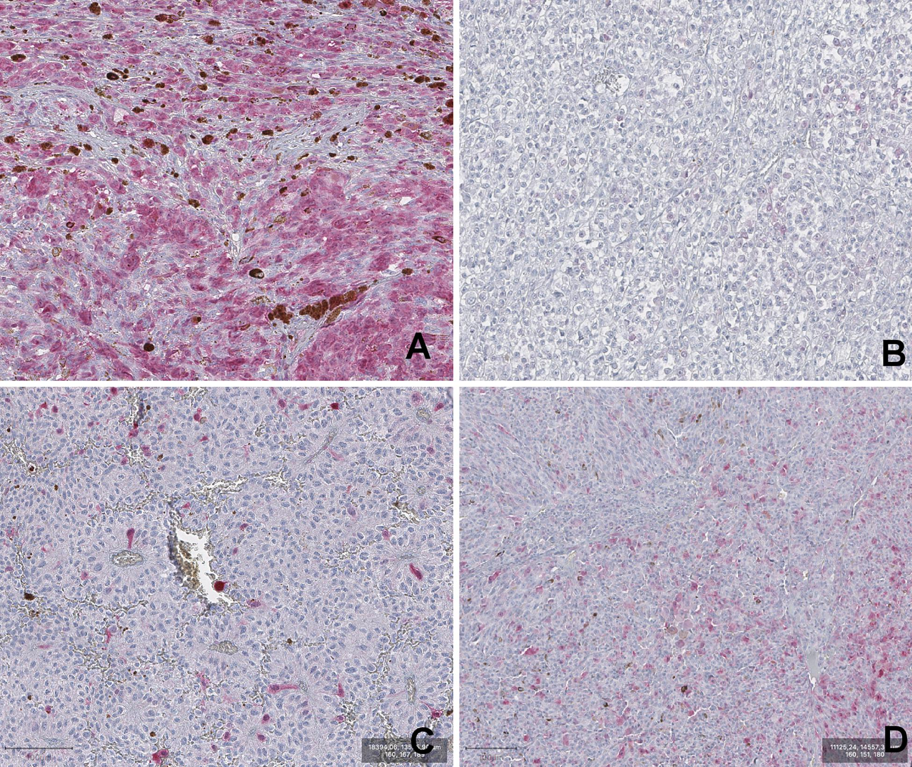

|  |
Appl. Sci. 2020, 10, 8285.Deep Learning-Based Pixel-Wise Lesion Segmentation on Oral Squamous Cell Carcinoma ImagesFrancesco Martino, Domenico D. Bloisi, Andrea Pennisi, Mulham Fawakherji, Gennaro Ilardi, Daniela Russo, Daniele Nardi, Stefania Staibano, and Francesco Merolla |
| Oral squamous cell carcinoma is the most common oral cancer. In this paper, we present a performance analysis of four different deep learning-based pixel-wise methods for lesion segmentation on oral carcinoma images. Two diverse image datasets, one for training and another one for testing, are used to generate and evaluate the models used for segmenting the images, thus allowing to assess the generalization capability of the considered deep network architectures. An important contribution of this work is the creation of the Oral Cancer Annotated (ORCA) dataset, containing ground-truth data derived from the well-known Cancer Genome Atlas (TCGA) dataset. [Read more] | |
|  |
Frontiers 2020, 10, 2112Expression of P16INK4a in Uveal Melanoma: New PerspectivesDaniela Russo, Rosa Maria Di Crescenzo, Giuseppe Broggi, Francesco Merolla, Francesco Martino, Silvia Varricchio, Gennaro Ilardi, Alessandra Borzillo, Raffaella Carandente, Sara Pignatiello, Massimo Mascolo, Rosario Caltabiano, and Stefania Staibano |
| Uveal melanoma (UM) is the most common intraocular tumor in adults. Despite sharing the name and similar morphological features with cutaneous melanoma (CM), it is an entirely different neoplasia with a particular genetic background and clinical behavior. CDKN2A is a gene located at chromosome 9p21, encoding for P16INK4a and P14(ARF) proteins, whose role as a tumor suppressor has been clearly defined in many malignant tumors. CDKN2A frequently presents germline mutations in familial CM and epigenetic downregulation in a considerable percentage of sporadic CM... [Read more] | |
Cancers 2020, 12, 1344. 2018A Machine-Learning Approach for The Assessment of The Proliferative Compartment of Solid Tumors On Hematoxylineosin-Stained SectionsFrancesco Martino, Silvia Varricchio, Daniela Russo, Francesco Merolla, Gennaro Ilardi, Massimo Mascolo, Giovanni Orabona dell’Aversana, Luigi Califano, Guglielmo Toscano, Giuseppe De Pietro, Maria Frucci, Nadia Brancati, Filippo Fraggetta, and Stefania Staibano |
|
| We introduce a machine learning-based analysis to predict the immunohistochemical (IHC) labeling index for the cell proliferation marker Ki67/MIB1 on cancer tissues based on morphometrical features extracted from hematoxylin and eosin (H\&E)-stained formalin-fixed, paraffin-embedded (FFPE) tumor tissue samples. We provided a proof-of-concept prediction of the Ki67/MIB1 IHC positivity of cancer cells through the definition and quantitation of single nuclear features... [Read more] | |
 |
Int J Mol Sci. 2018;19(3):883HPV Virus Transcriptional Status Assessment in A Case of Sinonasal CarcinomaGennaro Ilardi, Daniela Russo, Silvia Varricchio, Giovanni Salzano, Giovanni Dell'Aversana Orabona, Virginia Napolitano, Rosa Maria Di Crescenzo, Alessandra Borzillo, Francesco Martino, Francesco Merolla, Massimo Mascolo, and Stefania Staibano |
| Human Papilloma Virus (HPV) can play a causative role in the development of sinonasal tract malignancies. In fact, HPV may be the most significant causative agent implicated in sinonasal tumorigenesis and is implicated in as many as 21% of sinonasal carcinomas. To date, there are no definitive, reliable and cost-effective, diagnostic tests approved by the FDA for the unequivocal determination of HPV status in head and neck cancers... [Read more] | |